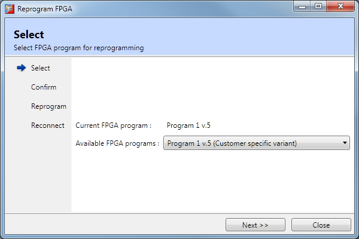
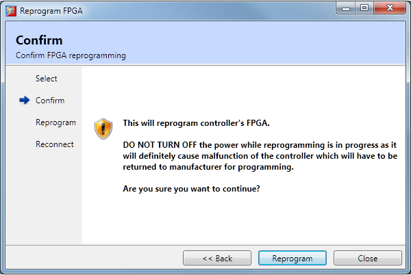
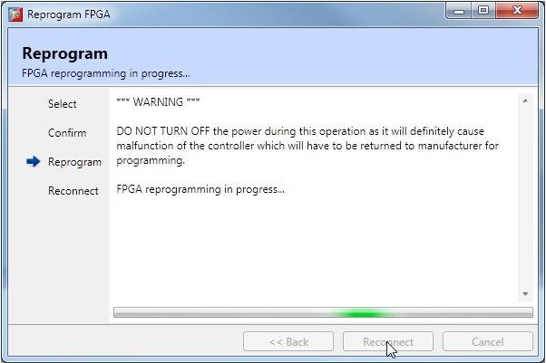
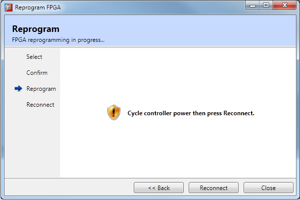

The FPGA Programmer tool allows the user to reprogram the FPGA in the controller. Using this tool it is possible to upgrade the FPGA code without having to return the controller to Trio. This functionality is not supported by all controllers.
The tool is implemented as a Wizard which guides the user through the programming process. The tool is started by selecting “Controller / Reprogram FPGA…” the Motion Perfect’s main menu. The stages of the process are as follows:

The current FPGA version and the versions available are displayed. The user should choose the correct version to install from the combo-box then press “Next” to continue.

A warning message is displayed. If you are happy with this then press “Reprogram” to continue.

A warning message is displayed and a progress bar is used to indicate that something is happening. Motion Perfect cannot display actual progress because the information is not available to it. When programming is complete the user is prompted to cycle controller power and then reconnect.

Cycle controller power, wait for the controller to restart then press the “Reconnect” button.